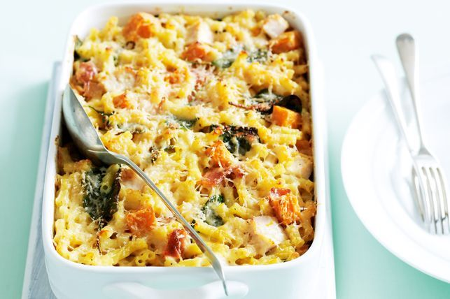

Figure 1. Chicken Pasta Bake Dish
Description
Ingredients
- 4 tbsp olive oil
- 1 onion, finely chopped
- 2 garlic cloves, crushed
- 1/4 tsp chili flakes
- 2 x 400g cans chopped tomatoes
- 1 tsp caster sugar
- 6 tbsp mascarpone
- 4 skinless chicken breasts, sliced into strips
- 300g penne
- 70g mature cheddar, grated
- 50g grated mozzarella
- 1/" small bunch of parsley, finely chopped
Preparation
- Heat 2 tbsp of the oil in a pan over a medium heat and fry the onion gently for 10-12 m ins.
- Add the garlic and chili flakes and cook for 1 min.
- Tip in the tomatoes and sugar and season to taste.
- Simmer uncovered for 20 mins until thickened, then stir through the mascarpone.
- Heat 1 tbsp of oil in a non-stick frying pan.
- Season the chicken and fry for 5-7 mins or until the chicken is cooked through.
- Heat the hoven to 220C/200C fan/gas 7. Cool the penne following pack instructions.
- Drain and toss with the remaining oil.
- Tip the pasta into a medium sized ovenproof dish.
- Stir in the chicken and pour over the sauce.
- Top with the cheddar, mozzarella and parsley.
- Bake for 20 mins or until golden and bubbling.